Code
normal <- rnorm(1000)
par(mfrow = c(1, 2))
hist(normal, col = "gray", border = "white", breaks = 50)
qqnorm(normal)
abline(0, 1, col="red")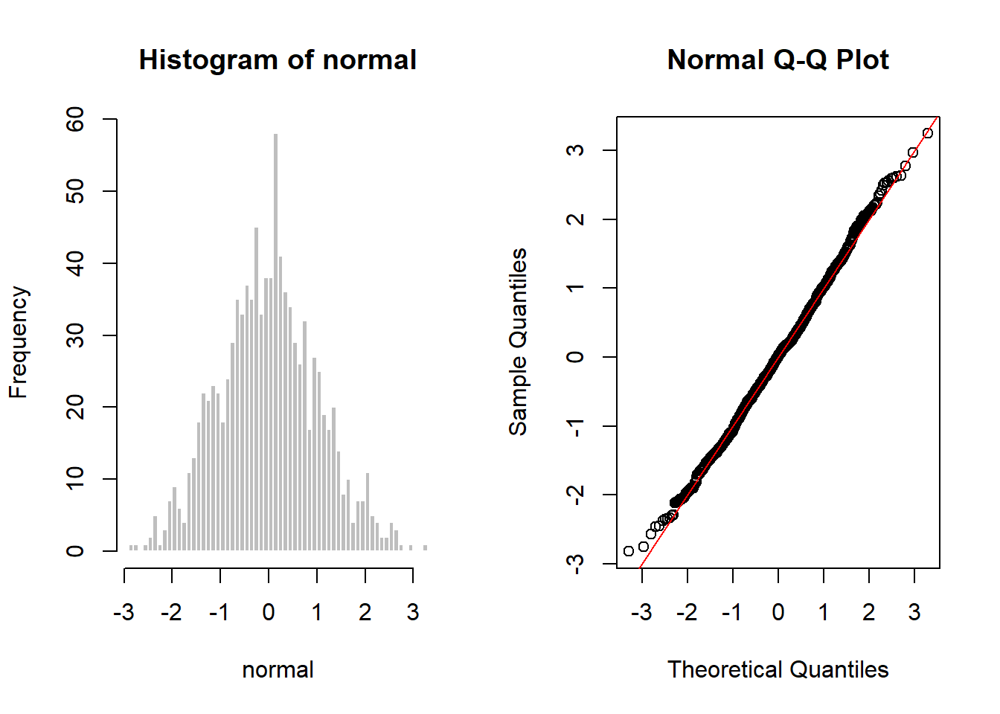
POLSCI 699 Section
QQ Plots allow us to evaluate whether two samples come from the same distribution. Here are some examples comparing a simulated dataset to the standard normal distribution.
normal <- rnorm(1000)
par(mfrow = c(1, 2))
hist(normal, col = "gray", border = "white", breaks = 50)
qqnorm(normal)
abline(0, 1, col="red")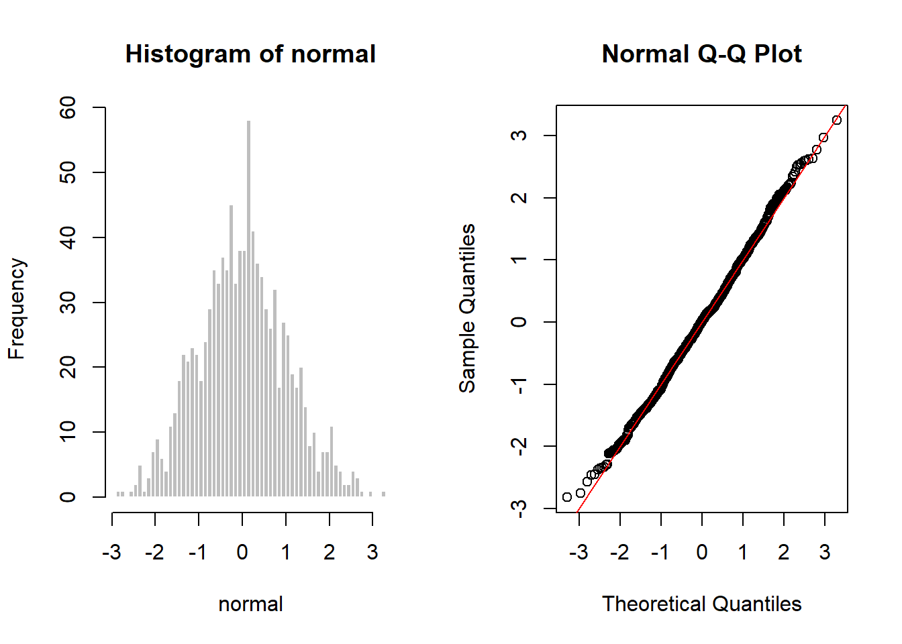
If a distribution is skewed left, the end points will fall below the 45-degree line.
skew.left <- rchisq(1000, 2) * -1
par(mfrow = c(1, 2))
hist(skew.left, col = "gray", border = "white", breaks = 50)
qqnorm(skew.left)
abline(0, 1, col="red")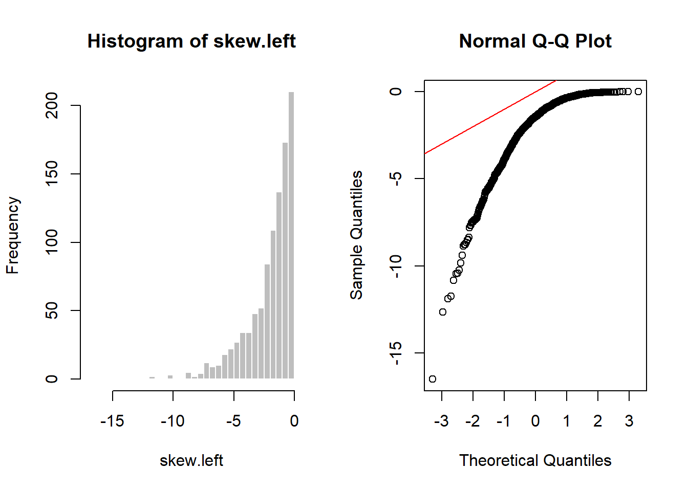
If a distribution is skewerd right, the end points will fall above the 45-degree line.
skew.right <- rchisq(1000, 2)
par(mfrow = c(1, 2))
hist(skew.right, col = "gray", border = "white", breaks = 50)
qqnorm(skew.right)
abline(0, 1, col="red")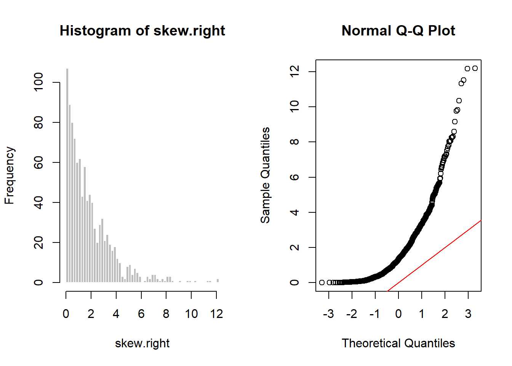
If a distribution has light tails, this means there are fewer small and large values than what we would expect in the standard normal distribution.
light.tail <- runif(1000, min = -3, max = 3)
par(mfrow = c(1, 2))
hist(light.tail, col = "gray", border = "white", breaks = 50)
qqnorm(light.tail)
abline(0, 1, col="red")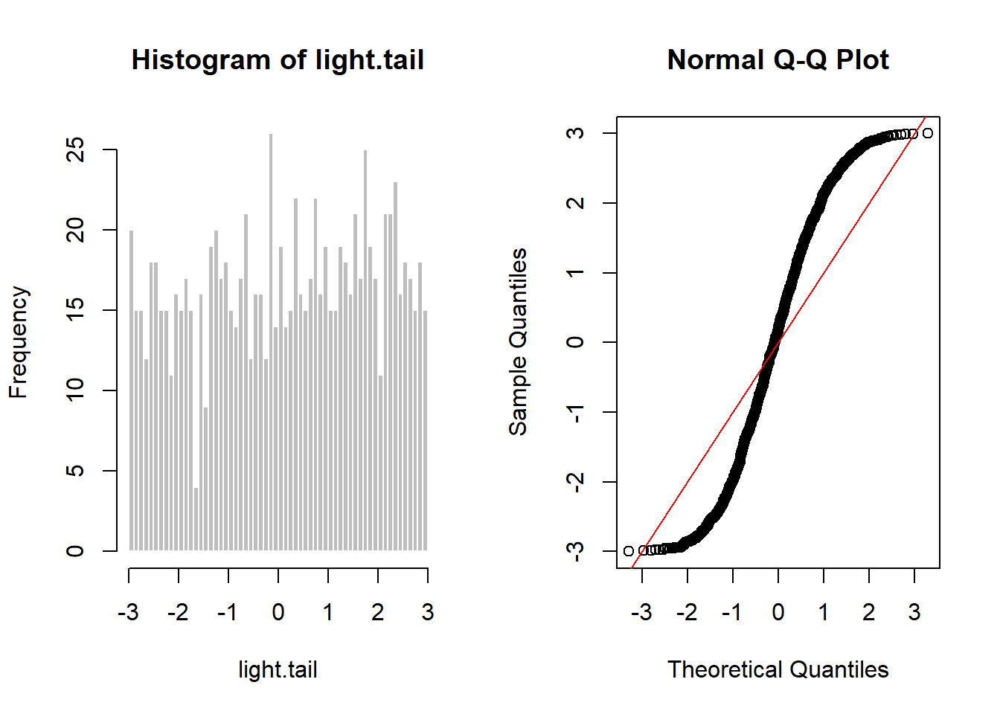
If a distribution has heavy tails, this means there are more extreme values (high and low) than what we would expect in the standard normal distribution.
heavy.tail <- rt(1000, 4)
par(mfrow = c(1, 2))
hist(heavy.tail, col = "gray", border = "white", breaks = 50)
qqnorm(heavy.tail)
abline(0, 1, col="red")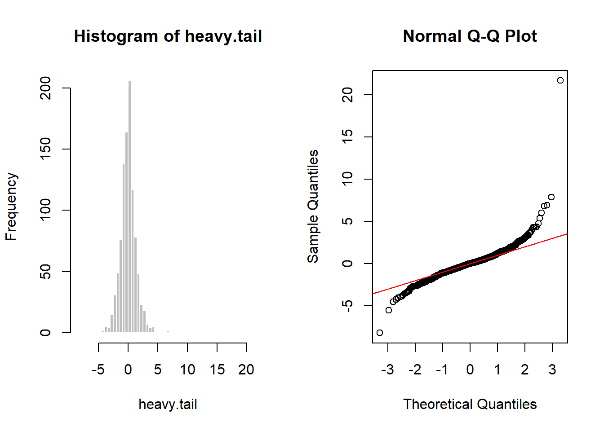
In 2015, political scientists David Broockman, Joshua Kalla, and Peter Aronow documented some fishy-looking data from an article published in Science by a political science graduate student: Irregularities in LaCour (2014)
One key concern of Broockman et al was that LaCour’s data looked strikingly similar to a previous survey sample, even though LaCour had claimed the studies to be original random samples. How did they show this? They compared the distributions of the LaCour study data with the previous data from the 2012 Cooperative Campaign Analysis Project (CCAP).
You can check out the link for their full report, but here’s just a quick example of what they found. Note: this is not the exact data or procedures in Broockman et al.
The histograms of the LaCour studies look practically identical to each other and to the CCAP data, even though they are supposed to come from different random samples.
par(mfrow=c(2,2))
hist(lacour$therm1,
main = "LaCour 1",
breaks = 5)
hist(lacour$therm2,
main = "LaCour 2",
breaks = 5)
hist(lacour$therm3,
main = "LaCour 3",
breaks = 5)
hist(ccap$gaytherm,
main = "CCAP",
breaks = 5)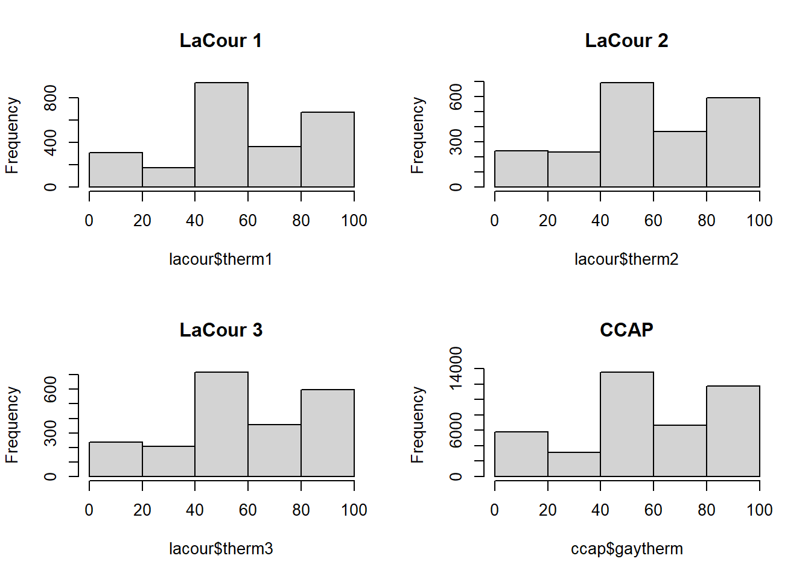
QQ Plots comparing the first LaCour sample to the CCAP sample.
ccap$gaytherm2 = ifelse(is.na(ccap$gaytherm), 50, ccap$gaytherm) # if missing, set to 50
par(mfrow=c(1,2))
qqplot(lacour$therm1, ccap$gaytherm, main = "Without NAs",
xlab = 'LaCour 1', ylab = 'CCAP')
abline(0, 1, col="red")
qqplot(lacour$therm1, ccap$gaytherm2, main = "NAs set to 50",
xlab = 'LaCour 1', ylab = 'CCAP')
abline(0, 1, col="red")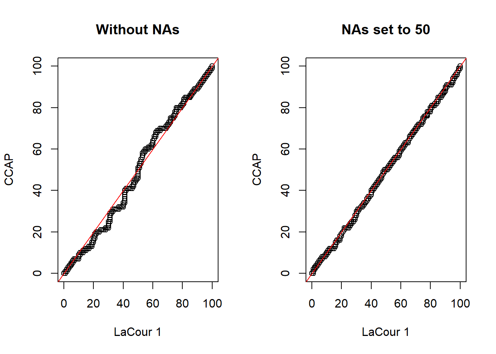
QQ Plots comparing the second and third LaCour samples to simulated data from the CCAP study with added noise from a normal distribution.
ccap$gaytherm3 = ccap$gaytherm2 + rnorm(length(ccap$gaytherm2), mean = 0, sd = 5)
ccap$gaytherm3[ccap$gaytherm3 < 0] <- 0
ccap$gaytherm3[ccap$gaytherm3 > 100] <- 100
ccap$gaytherm4 = ccap$gaytherm3 + rnorm(length(ccap$gaytherm3), mean = 0, sd = 5)
ccap$gaytherm4[ccap$gaytherm4 < 0] <- 0
ccap$gaytherm4[ccap$gaytherm4 > 100] <- 100
par(mfrow=c(1,2))
qqplot(lacour$therm2, ccap$gaytherm3, main = "LaCour 2 vs. CCAP Simulated",
xlab = 'LaCour 2')
abline(0, 1, col="red")
qqplot(lacour$therm3, ccap$gaytherm4, main = "LaCour 3 vs. CCAP Simulated")
abline(0, 1, col="red")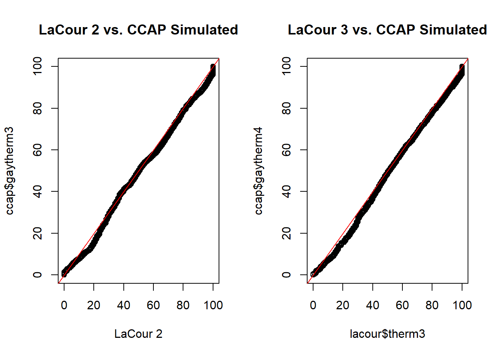
There you have it. One lecture in and you too could be a political science hero!
library(haven)
load('clean_anes.rda') # load dataFeeling thermometer question: We’d also like to get your feelings about some groups in American society. When I read the name of a group, we’d like you to rate it with what we call a feeling thermometer. Ratings between 50 degrees-100 degrees mean that you feel favorably and warm toward the group; ratings between 0 and 50 degrees mean that you don’t feel favorably towards the group and that you don’t care too much for that group. If you don’t feel particularly warm or cold toward a group you would rate them at 50 degrees. If we come to a group you don’t know much about, just tell me and we’ll move on to the next one.
This subset of the 2020 ANES dataset contains feeling thermometers towards the following groups:
| Group | Variable Name |
|---|---|
| Black Americans | black.therm |
| White Americans | white.therm |
| Hispanics | hispanic.therm |
| Asians | asian.therm |
| Lesbians and Gays | lg.therm |
| Christians | christian.therm |
| Muslims | muslim.therm |
| Illegal Immigrants | illegal.therm |
| Feminists | feminist.therm |
| Liberals | lib.therm |
| Conservatives | con.therm |
Choose which feeling thermometer you’d like to analyze by replacing feminist.therm in the following cell with the variable name of your thermometer.
# replace 'feminist.therm' with your variable name
thermometer <- 'feminist.therm'
y <- na.omit(df[, paste(thermometer)])
#summary(y)Fill in the following code chunk with the proper functions for mean, median, and mode.
# use this cell to fill in the proper functions for measures of location for variable y
# mean
mean.y <- mean(y)
# median
median.y <- median(y)
# mode
mode.y <- which.max(table(y))
mode.y <- as.numeric(names(mode.y))| Statistic | Value |
|---|---|
| Mean | 58.5640186 |
| Median | 60 |
| Mode | 50 |
summary() functionYou can view the minimum, maximum, median, mean, 1st quartile (0.25 quantile), and 3rd Quartile (0.75 quantile) of a variable by using the summary() function:
summary(y) Min. 1st Qu. Median Mean 3rd Qu. Max.
0.00 50.00 60.00 58.56 85.00 97.00 Fill in the following code chunk with the proper functions for the interquartile range, median absolute deviation, variance, and standard deviation.
# use this cell to fill in the proper functions for measures of scale for variable y
# IQR
iqr.y <- IQR(y)
# MAD
mad.y <- mad(y)
# variance
variance.y <- var(y)
# standard deviation
standard.deviation.y <- sd(y)| Statistic | Value |
|---|---|
| Interquartile Range (IQR) | 35 |
| Median Absolute Deviation (MAD) | 29.652 |
| Variance | 691.8391093 |
| Standard Deviation | 26.3028346 |
Create each of the following plots for your chosen feeling thermometer.
hist(y, col = '#00274C', xlab = "Rating",
main = paste0("Feeling Thermometer Rating: ", thermometer),
breaks = 20)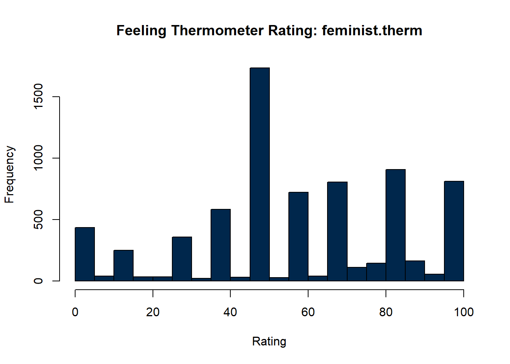
boxplot(y, ylab = "Rating",
main = paste0("Feeling Thermometer Rating: ", thermometer))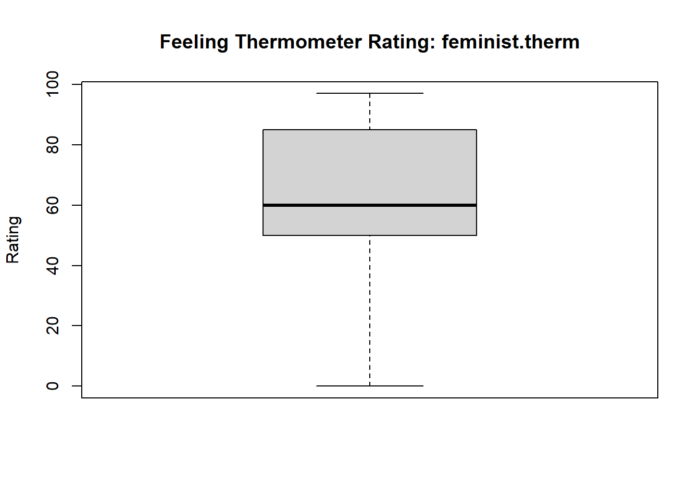
plot(ecdf(y), #cex=0.5,
xlab = "Rating",
main = paste0("Feeling Thermometer Rating: ", thermometer))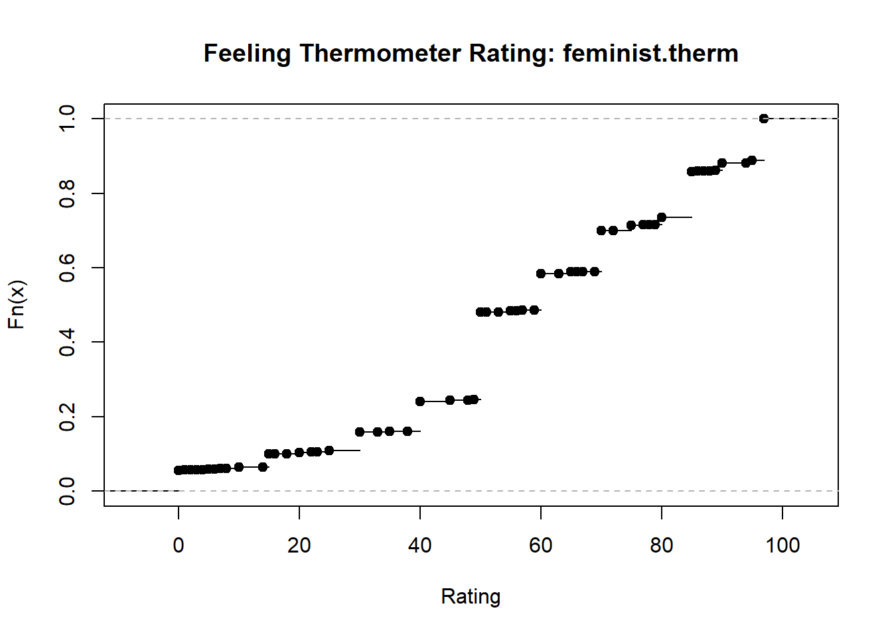
pp <- ppoints(10001)
sample.q <- quantile(y, probs = pp)
plot(pp, sample.q, xlab = "p", ylab = "Sample Quantiles (Rating)",
main = paste0("Feeling Thermometer Rating: ", thermometer))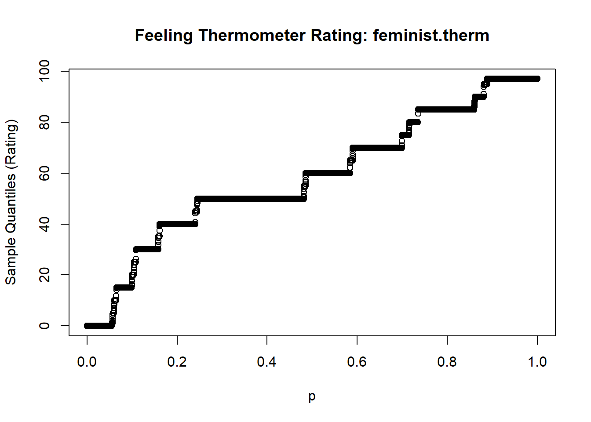
theoretical.q <- qnorm(pp, mean = mean(y), sd = sd(y))
plot(theoretical.q, sample.q,
xlab = "Theoretical Normal Quantiles",
ylab = "Sample Quantiles (Rating)",
main = paste0("Feeling Thermometer Rating: ", thermometer))
abline(0, 1, col = "red", lwd = 2)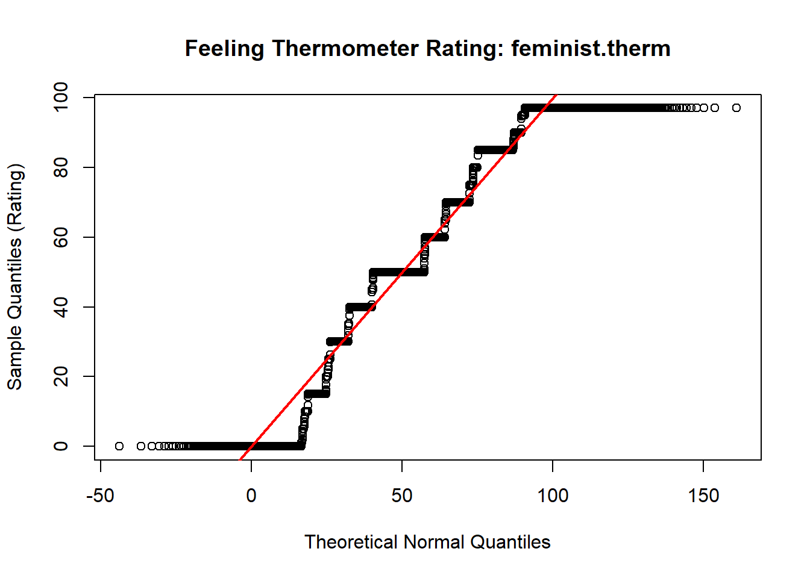
In the following section, we will compare the thermometer ratings of two subsets of our sample. You can choose from the following binary variables:
|
Variable Name |
Values |
|---|---|
|
|
1 = has Bachelors degree or more 0 = does not |
|
|
1 = Christian (Protestant or Catholic) 0 = not |
|
|
1 = married 0 = not |
Choose which feeling thermometer you’d like to analyze by replacing feminist.therm in the following cell with the variable name of your thermometer.
# replace 'married' with your variable name
x <- 'married'
subgroup.df <- na.omit(data.frame(x = df[, paste(x)], y = df[, paste(thermometer)]))library(lattice)
histogram( ~ y | x, data = subgroup.df, type = "count",
ylab = 'Rating',
main = paste0("Feeling Thermometer Rating: ", thermometer))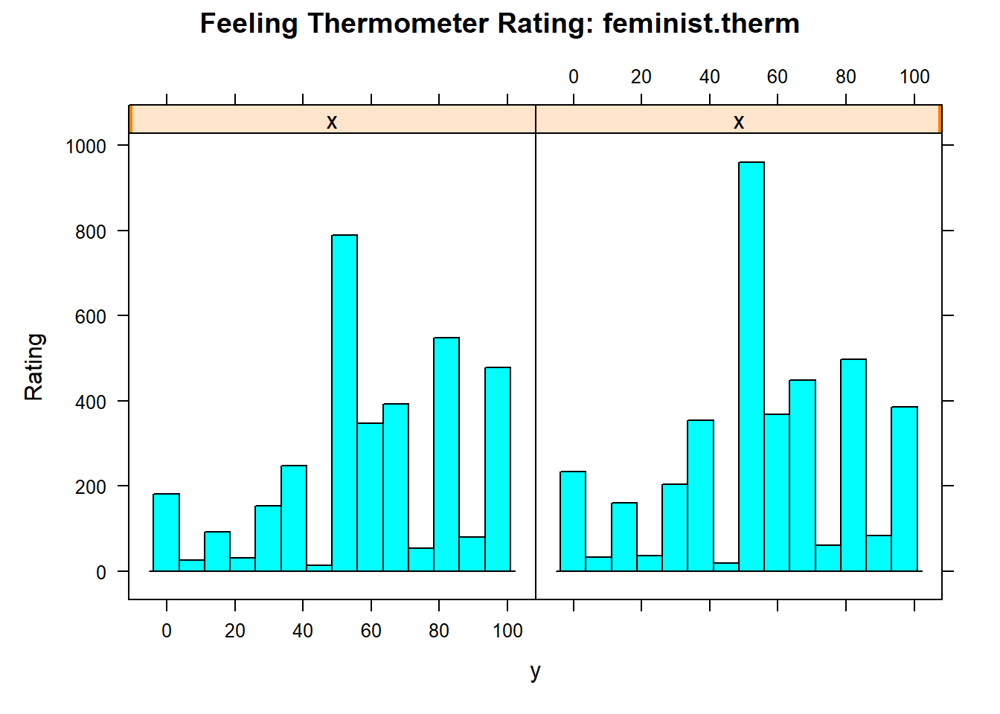
pp <- ppoints(10001)
sample.q.0 <- quantile(subgroup.df$y[subgroup.df$x == 0], probs = pp)
sample.q.1 <- quantile(subgroup.df$y[subgroup.df$x == 1], probs = pp)
plot(sample.q.0, sample.q.1,
xlab = "Sample Quantiles (Rating among 0)",
ylab = "Sample Quantiles (Rating among 1)",
main = paste0("Feeling Thermometer Rating: ", thermometer))
abline(0, 1, col="red", lwd=2)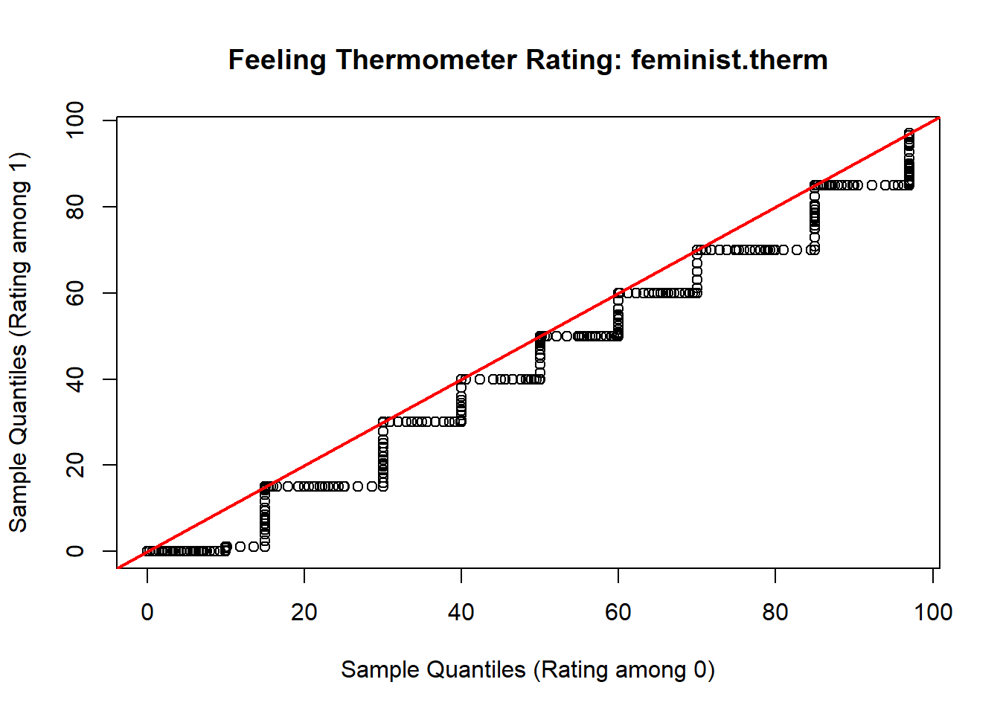
bwplot(x ~ y, data = subgroup.df, horizontal=TRUE,
main = paste0("Feeling Thermometer Rating: ", thermometer))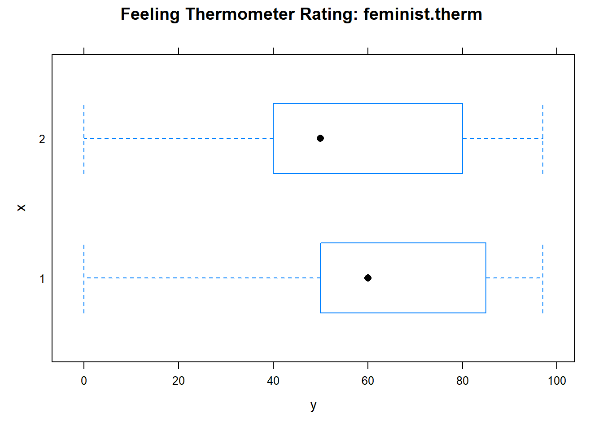